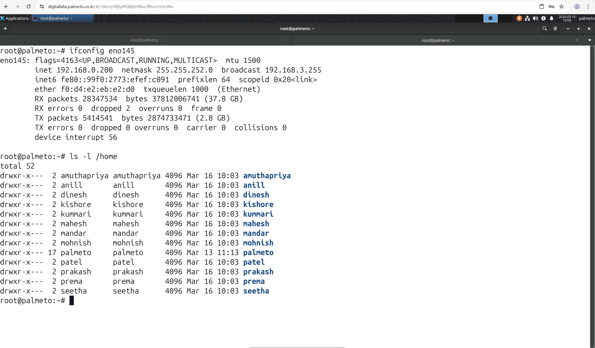
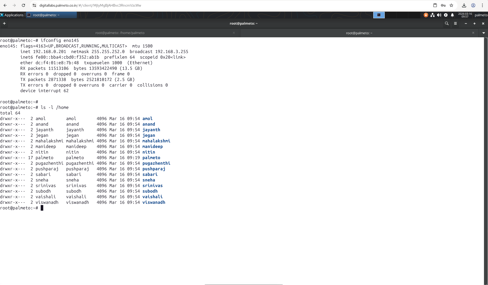

https://forms.cloud.microsoft/r/DQ7nywyP3U
We have got two servers with below configurations - Dell PowerEdge R840 Server - Intel Xeon Processor with 192 CPU Cores - 1 TB RAM - 21 TB HDD I have created about 14 users including me(trainer) on each server Server 1 (192.168.0.200) Server 2 (192.168.0.201)

